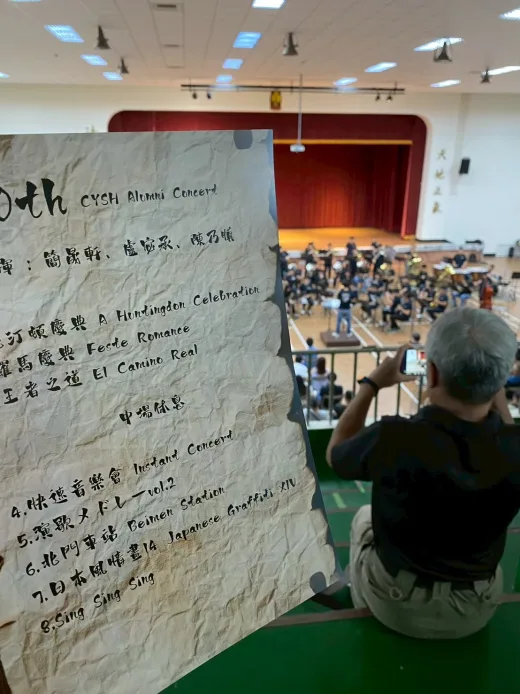
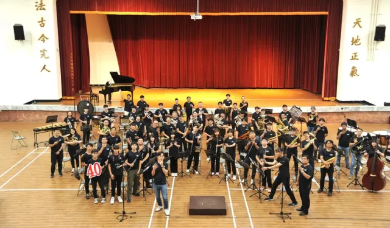
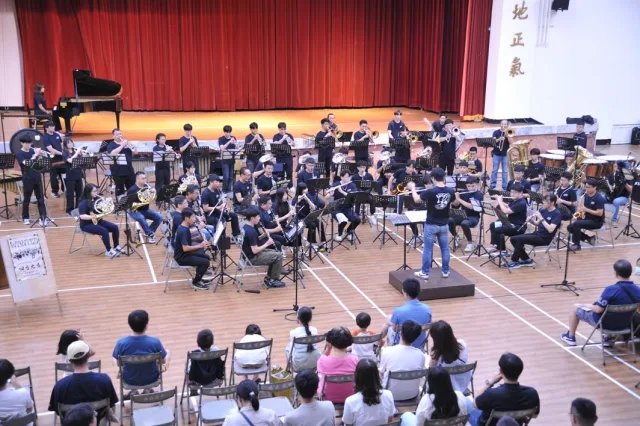

演出資訊
| 屆別 | 第 40 屆 |
|---|---|
| 年度 | 2025（民國 114 年） |
| 主題 | 《四方之音》 |
| 日期 | 2025.08.16 |
| 時間 | 14:00 |
| 場地 | 嘉義高中樹人堂 |
| 指揮 | 盧宓承（指揮）、簡晟軒（指揮）、陳乃慎（指揮） |
| 獨奏／協奏 | 資料待考 |
| 籌辦字頭 | 四字頭 |
| 票務 | 票務資訊待考 |
| 資料狀態 | 部分可考 |
待補欄位：完整團員名單。
關於這場音樂會
第 40 屆《四方之音》於 2025 年 8 月 16 日 14:00 在嘉義高中樹人堂演出，13:30 開放觀眾進場。
本屆由四字頭校友承接籌辦，104 年入學的陳乃慎擔任總召，並與盧宓承、簡晟軒共同擔任指揮。宣傳貼文指出，校友聯演自 1985 年開始，除 2021 年因防疫政策暫停外，至本屆邁入第 40 屆。
曲目橫跨管樂原創、古典改編、爵士與流行曲風；正式曲目先依《四方之音》宣傳貼文與現場曲目表照片共同確認。參考錄音資料夾中另列部分曲目，是否為正式曲目、備用曲或安可仍待錄影或節目冊交叉確認。
指揮與獨奏


曲目
上半場
- 杭汀頓慶典 A Huntingdon Celebration
- 羅馬慶典 Feste RomaneOttorino Respighi／arr. Ton van Grevenbroek／宣傳貼文標註 I. 節選 + IV. 全
- 王者之道 El Camino RealAlfred Reed
下半場
- 快速音樂會 Instant ConcertHarold L. Walters
- 演歌集錦 第二輯 演歌メドレー Vol.2宣傳貼文標註曲目含〈津輕海峽冬景色〉〈与作〉〈浪花節人生〉
- 北門車站 Beimen Station
- 日本風情畫 14 Japanese Graffiti XIV宣傳貼文標註 ARASHI
- Sing Sing Sing
曲目與順序以《四方之音》宣傳貼文及現場曲目表照片共同確認；參考錄音截圖另列〈安平追想曲〉、Chiikawa 與 Yesterday，是否正式演出或安可待節目冊、錄影或校友補充確認。
演出人員名單
完整演出人員名單待節目冊、團員名冊或校友補充資料確認。
幕後行政團隊
| 職務 | 人員 |
|---|---|
| 總召 | 陳乃慎 |
贊助與致謝
贊助、協辦與致謝名單仍待節目冊或海報補齊。
演出留影



節目冊
目前尚未整理到可公開呈現的完整節目冊掃描圖檔。
影片連結
目前尚無可公開整理的錄影連結。
相關文章
目前尚無已整理的相關文章。
資料補充
本頁日期、時間、開放入場時間、場地、指揮、總召、曲目與宣傳文字，主要依《四方之音貼文-01.md》整理；現場曲目表照片作曲序交叉驗證，參考錄音截圖保留為曲目待確認線索。收支表含捐款、匯款、購買、餐費與車牌等內部行政資料，本次僅用於判斷不宜公開個人金額與明細，未列入公開致謝名單。
目前仍待補：完整團員名單。